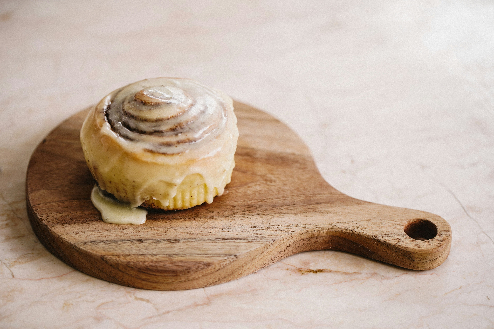

Receta para rollos de Canela

Ingredientes
Para la masa:
- 450 gr harina sin polvos de hornear
- 2 ¼ cdta levadura seca (12 grs aprox)
- 2 cdas agua tibia
- 250 ml leche tibia
- 100 gr azúcar blanca
- 1 huevo
- Opcional: 1/2 cdta Esencia de Vainilla Gourmet
- ¼ cdta sal
- 85 gr de mantequilla sin sal
Para el relleno
- 70 gr de mantequilla
- 180 gr de azúcar morena
- 3 cdas de canela en polvo
Para el glaseado
- 1 sobre de Base para Glaseado Vainilla Gourmet
- 1 cda de agua
Preparación
- En un bowl poner la levadura, la leche tibia, agua tibia y mezclar. Luego, agregar el azúcar y mezclar bien. Agregar el huevo batido (con tenedor) y mezclar hasta integrar. Opcional: agregar 1/2 cdta de Esencia de Vainilla Gourmet.
- Agregar la mitad de la harina y mezclar con movimientos envolventes. Luego, agregar la mantequilla derretida y finalmente, la otra mitad de la harina y mezclar bien hasta formar una masa pegajosa pero que se puede despegar del bowl. Dejar reposar tapado por 1 ½ hora, hasta que doble su volumen.
- Poner la masa en una superficie plana y hacer un rectángulo con uslero.
- Para el relleno, derretir la mantequilla y agregar azúcar morena y Canela Molida Gourmet. Pincelear la masa con el relleno por toda la superficie. Después, enrollar la masa por el lado más largo y cortarlo en rollos de 1 ½ a 2 cm. aprox.
- Poner los rollos en una lata de horno o fuente enmantequillada dejando espacio entre cada uno. Dejar reposar por al menos 20 minutos o hasta que dupliquen su tamaño.
- Llevar a horno precalentado por 20 minutos a 180°C.
- Para el glaseado, mezclar todos los ingredientes y poner sobre los rollos calientes.
Presiona aquí para acceder al video de la receta